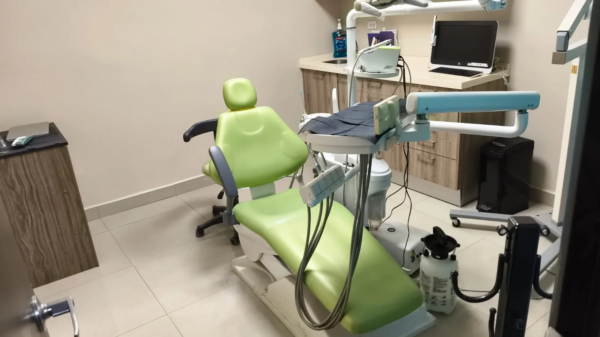
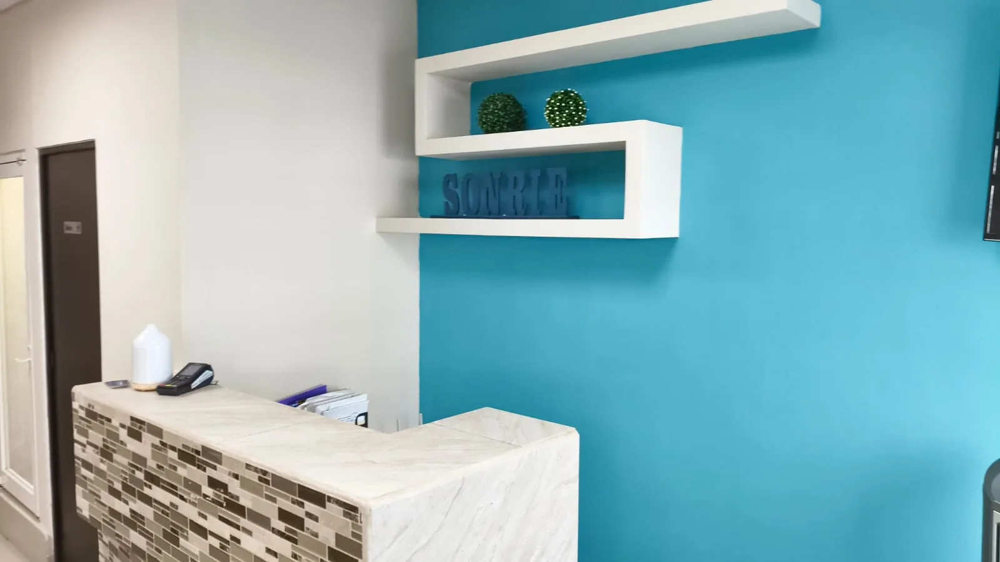

ORTODONCIA Y CUIDADO DENTAL · LA PAZ, B.C.S.
Que tu sonrisa
Que tu sonrisa
hable de ti.
Hay sonrisas que cuentan historias. La tuya merece cuidado, tiempo y un plan que entiendas. En Orthomax, empezamos por escucharte.
01Te escuchamos
02Te explicamos
03Te acompañamos

AQUÍ EMPIEZA TU PRÓXIMA SONRISAAntonio Rosales 555 · La Paz
Muy tú.
Muy Orthomax.
Muy Orthomax.
Tu centro odontológico en La Paz, Baja California Sur.Descubre Orthomax
DISTINTAS RAZONES. UN MISMO CUIDADO.
¿Qué te gustaría
¿Qué te gustaría
para tu sonrisa?
Alinear tus dientes, explorar un cambio o cuidar lo que ya has logrado. Hay muchas razones para visitarnos; la primera consulta es el lugar para ponerlas sobre la mesa.
Encuentra por dónde empezarOrtodoncia
Conocer másOrtodoncia
Estética
Conocer más
Ortopedia
Maxilar
Conocer más
Blanqueamiento
Dental
Conocer más
Retenedores y
Contención
Conocer más

Pasa. Estás en Orthomax.
ASÍ ENTENDEMOS EL CUIDADO
Antes de ver tu sonrisa,
Antes de ver tu sonrisa,
queremos conocerte.
Quizá llevas tiempo pensando en ponerte brackets. Quizá solo tienes una pregunta. Puedes empezar por ahí: cuéntanos qué te trae, revisamos contigo las opciones y damos espacio a tus dudas.
Elegir un tratamiento también significa entenderlo. Hablamos del plan, el presupuesto y las revisiones antes de comenzar.
Preguntas
bienvenidas
bienvenidas
Un plan
explicado contigo
explicado contigo
Seguimiento
paso a paso
paso a paso
Decisiones
con confianza
con confianza
ORTODONCIA Y TRATAMIENTOS EN LA PAZ
Un cambio que empieza
Un cambio que empieza
por lo que tú buscas.
Explora las opciones de Orthomax. En consulta definimos cuáles corresponden a tu caso y resolvemos lo que necesitas saber antes de decidir.
5 tratamientos para conocer. Una valoración para elegir.
Ortodoncia convencional
Si estás pensando en brackets, empecemos por tus preguntas. Revisamos tu sonrisa y conversamos sobre el plan de ortodoncia, las citas de seguimiento y el presupuesto para tu caso.
ConsultarOrtodoncia estética
¿Te importa cómo se verá tu tratamiento en el día a día? Conoce las alternativas de ortodoncia estética que ofrecemos, sus materiales y cuidados. La valoración ayuda a decidir si son una opción para ti.
ConsultarOrtopedia maxilar
Las dudas sobre el desarrollo de los maxilares merecen una conversación. Trae tus preguntas a una valoración de ortopedia maxilar; ahí revisamos el caso y explicamos los siguientes pasos.
ConsultarBlanqueamiento dental
Antes de pensar en un tono, hablemos de tus expectativas. En la valoración de blanqueamiento dental revisamos si puedes realizarlo, qué cuidados requiere y qué esperar del procedimiento.
ConsultarRetenedores y contención
Terminar los brackets abre una nueva etapa de cuidado. Consulta tus opciones de contención o agenda una revisión de tus retenedores. Si ya usas uno, avísanos al solicitar la cita.
Consultar«No sé qué necesito».
Está bien.
No hace falta llegar con un tratamiento elegido. Para eso es la primera conversación.
Quiero una valoraciónDEL PRIMER HOLA AL SIGUIENTE PASOTu primera visita,
Tu primera visita,
sin tantas vueltas.
No tienes que saber de dientes para hablar de tu sonrisa. Solo traer tus preguntas; el resto lo conversamos aquí.
- 01 / CONECTAMOS
Todo empieza con un hola.
Escríbenos por WhatsApp o llámanos. Propón el día que te acomode y confirmamos tu cita personalmente.
- 02 / CONVERSAMOS
Tu historia antes que el plan.
En consulta nos cuentas qué buscas. Revisamos tu sonrisa y hacemos espacio para las preguntas que traigas.
- 03 / LO HACEMOS CLARO
Decides con el panorama completo.
Hablamos de las opciones, los cuidados y el presupuesto. Así conoces el siguiente paso antes de darlo.
NOS VEMOS AQUÍ
Un vistazo antes
Un vistazo antes
de tu visita.
Esta es nuestra casa en La Paz: la entrada, la recepción y el consultorio donde hablaremos de tu sonrisa.
PREGUNTAR TAMBIÉN ES CUIDARTELo que quizá
Lo que quizá
te estás preguntando.
Elegir dentista también es saber cómo será tu primera visita. Aquí resolvemos lo práctico.
Tengo otra pregunta¿Cómo solicito mi primera cita en Orthomax?
Elige «Agenda tu cita», propón una fecha y una hora y continúa a WhatsApp. También puedes llamar al 612 142 9561. Te confirmaremos el horario personalmente: enviar la solicitud todavía no reserva la cita.
Quiero brackets, ¿por dónde empiezo?
Por una valoración de ortodoncia. Puedes venir con preguntas sobre materiales, presupuesto o revisiones. En consulta revisamos tu caso y explicamos las opciones antes de definir un plan. Conoce la ortodoncia convencional y la ortodoncia estética.
¿Me pueden dar un precio antes de ir?
Por WhatsApp podemos informarte del costo de la consulta. El presupuesto de un tratamiento se establece después de la valoración, porque depende de lo que necesite tu caso.
¿Qué llevo a mi primera visita?
Si tienes estudios dentales previos o usas un retenedor, coméntalo al agendar para saber qué llevar. Tus antecedentes y medicamentos se revisan directamente en consulta. Puedes traer anotadas tus preguntas.
¿Dónde están y en qué horarios atienden?
Estamos en Antonio Rosales 555, entre Altamirano y Ramírez, colonia Lic. Benito Juárez, La Paz, B.C.S. Atendemos de lunes a viernes de 9:00 a 19:00 y sábados de 9:00 a 14:00, con cita confirmada. Ver el mapa y cómo llegar a Orthomax.
¿Y si necesito cambiar mi cita?
Escríbenos o llámanos con anticipación. Revisaremos contigo otro horario disponible y te confirmaremos el cambio.
ORTHOMAX · LA PAZ, BAJA CALIFORNIA SURTu próxima visita
Tu próxima visita
ya tiene dirección.
Nos encuentras en Antonio Rosales, entre Altamirano y Ramírez. Guarda la ruta en tu teléfono y llega con tu cita confirmada.
ORTHOMAX · LA PAZ
Entre Altamirano y Ramírez
Lic. Benito Juárez, 23000
La Paz, B.C.S. Abrir indicaciones
Orthomax Centro de Especialidades Odontológicas
Antonio Rosales 555Entre Altamirano y Ramírez
Lic. Benito Juárez, 23000
La Paz, B.C.S. Abrir indicaciones
Teléfono y WhatsApp612 142 9561
AtenciónCon cita previa
- Lunes a viernes
- 9:00 am – 7:00 pm
- Sábado
- 9:00 am – 2:00 pm
- Domingo
- Cerrado
Los horarios están sujetos a confirmación.
LO SIGUIENTE PUEDE SER UN HOLA
Hay mucho por sonreír.
AGENDA TU CITA
Hay mucho por sonreír.
Empecemos por ti.
Cuéntanos qué tienes en mente. Busquemos un espacio para tu visita.